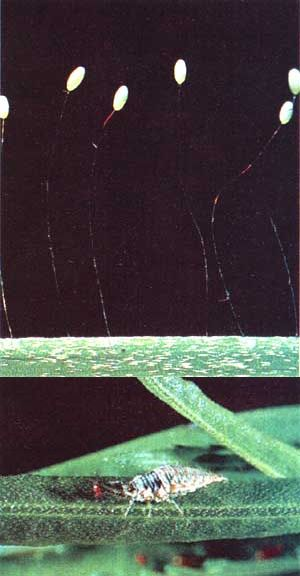
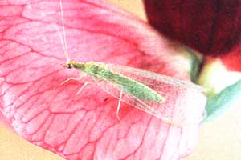

In this installment of our seriesdesigned to help you tell from foe in your garden, you'll learn about avid
aphid-eaters that gobble pests at an astounding rate
THE BACKYARD JUNGLE:
What are those delicate insects with beautiful netlike wings and brilliant eyes that you see fluttering around the porch light on warm evenings? In all probability, they're green lacewings (Chrysopidae), often called stink flies because of the repellent odor the adults of some species emit when handled. But never mind how they smell: Next to ladybird beetles, these gardener's helpers are the major predators of those leaf-loving pests, aphids!
Like butterflies, lacewings undergo a complete metamorphosis as they mature, and as adults they subsist mainly on a highcarbohydrate diet of pollen and nectar (although some do feed on other insects). It's in their larval stage that they're predaceous, primarily stalking aphids. Unlike their flighty parents, the wingless young tend to forage in the vicinity where they hatched, preying on the local pest population . . . so they're welcome guests in any flower or vegetable plot.
A lacewing larva consumes its prey by sucking out. its victim's fluids with hollow, tusklike jaws and can do away with as many as a hundred aphids a day, rounding out its menu with mites, thrips, young caterpillars, and other harmful insects. So voracious are young lacewings that they'd probably polish off one another . . . if nature hadn't devised a crafty system to quash their cannibalistic tendencies. The female adult often lays her eggs one after another in a straight line, but she places each at the tip of a long, slender thread made from body fluids secreted from her abdomen. This arrangement effectively separates the ova, so that the newly hatched young are discouraged from gobbling up their siblings. The setup also prevents ants and other insect predators from reaching the eggs before the larvae emerge.
Not only does a single female lacewing lay up to 600 eggs (usually in groups of one or two dozen), but she scouts up a "birthing room" that's close to a substantial infestation of aphids - or other small prey - so her youngsters will have plenty of nearby food to munch on after hatching.
Since green lacewings can be found throughout North America (as can their "cousins", the brown lacewings, or Hemerobiidae, which have similar predatory habits beneficial to the garden), your chances are pretty good that hungry lacewings will show up sooner or later in your planting plot-if they're not present already - to quell any siege of leaf-nibbling nuisances.
So don't haul out dangerous pesticides to do battle with the army of plant destroyers in your vegetable patch: In so doing, you'd risk killing all the helpful insects, as well as perhaps creating a health hazard for you, your family, and your animals. Instead, try crushing aphids by hand (thereby keeping in check the damage they can do), while leaving enough live ones around to lure lacewings into your garden. If you can build up the Chrysopidae population among your plants, at a hundred defunct aphids a day per lacewing larva, you may never have to resort to wielding a deadly chemical-filled sprayer again!
|
 PHOTO BY THE AUTHOR Chrysopidae often lay their eggs close to aphid infestations. Then, when the young lacewings emerge, their first meal is close by! Don't be alarmed by the sudden appearance of these larvae in your garden. They bring much more good than harm! |
 |
|